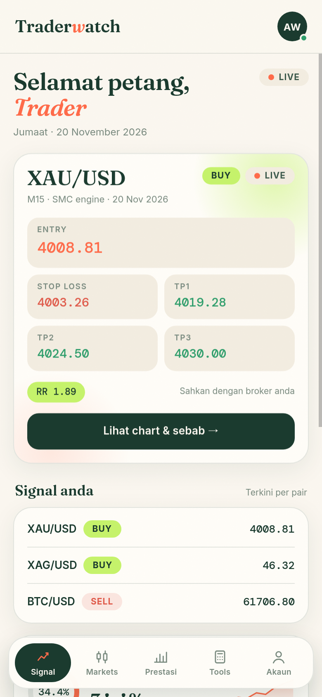
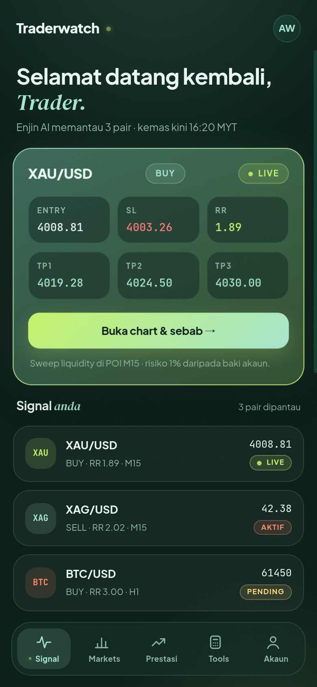
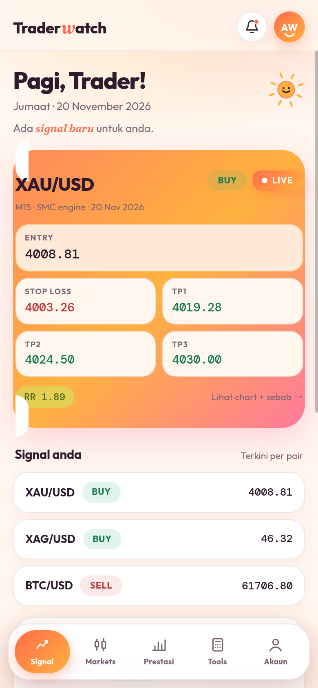
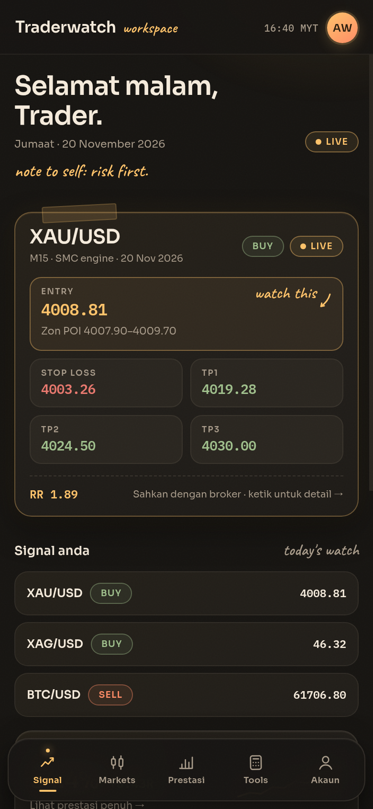

Empat arah segar untuk PWA app member TraderWatch — hangat, mesra, ada nyawa (bukan terminal sejuk / gold luxury / showcase busy). Setiap satu preview penuh 6 skrin: Signal, Detail chart beranotasi, Prestasi, Markets, Tools, Akaun. Klik untuk buka interaktif.
Kertas krim + dakwat hijau hutan + coral. Fraunces italic, grain halus, rasa newsletter manusia yang kemas.

Emerald forest + mint + lime, blob cahaya bernafas, kad glass membulat. Hidup, lembut, tumbuh.

Cream + gradient matahari terbit coral→amber→rose. Outfit bulat mesra, matahari tersenyum, ceria bertenaga.

Meja trader waktu malam — charcoal hangat + lampu amber, label tulisan tangan Caveat, grain kertas. Peribadi, tenang.
